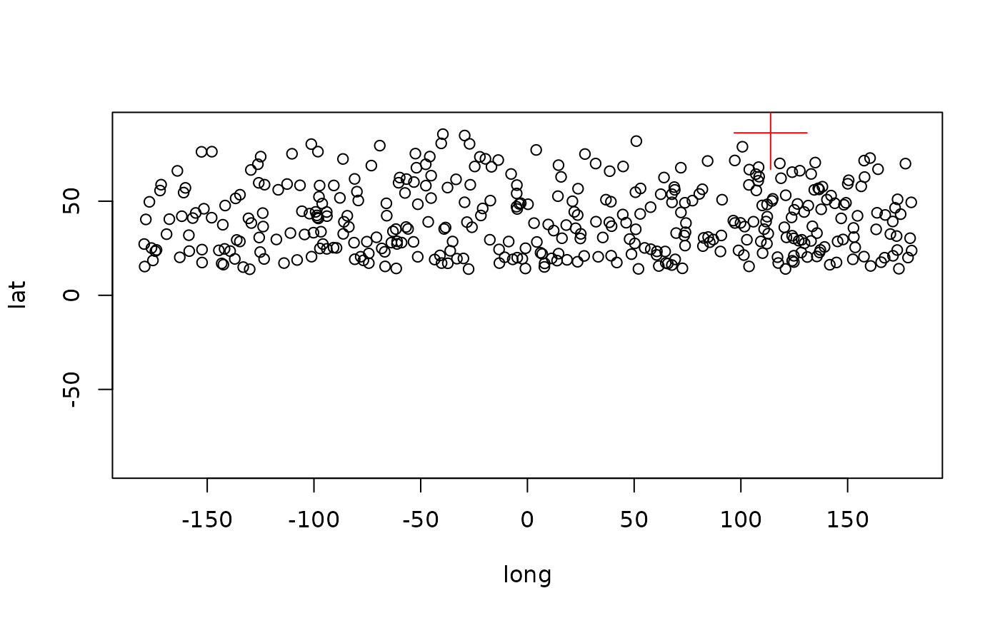

This function the projected place of the centroid from a pointset on the sphere.
Usage
surfacecentroid(x, ...)
# S4 method for matrix
surfacecentroid(x, output = "polar", center = c(0, 0, 0), radius = authRadius)
# S4 method for data.frame
surfacecentroid(x, ...)
# S4 method for SpatialPoints
surfacecentroid(x, ...)Arguments
- x
(
matrixordata.frame) Numeric data, XYZ or longitude-latitude coordinates of the set of points.- ...
Arguments passed to the
matrix-method.- output
(
character) The coordinate system of the output points. Can either be"polar"for longitude-latitude or"cartesian"for XYZ data.- center
(
numeric) The center of the sphere in XYZ coordinates (default is 0,0,0).- radius
(
numeric) The radius of the circle in case the input points have only polar coordinates. Unused when XYZ coordinates are entered. Defaults to the authalic radius of Earth ca. 6371.007km.
Details
The function implements great circle calculations to infer on the place of the centroid, which makes it resource demanding. This is necessary to avoid a particual error that frequently occurrs with other methods for centroid calculation, namely that the place of the centroid is right, but on the opposite hemisphere.
Examples
# generate some random points
allData <- rpsphere(1000)
# select only a subset
points<-allData[allData[,3]>1500,]
# transform to 2d
points2 <- CarToPol(points, norad=TRUE)
# the spherical centroid
sc <- surfacecentroid(points2, output="polar")
sc
#> long lat
#> 122.60241 87.43217
#3d plot
plot(points2, xlim=c(-180, 180), ylim=c(-90, 90))
points(sc[1], sc[2], col="red", cex=5, pch=3)
